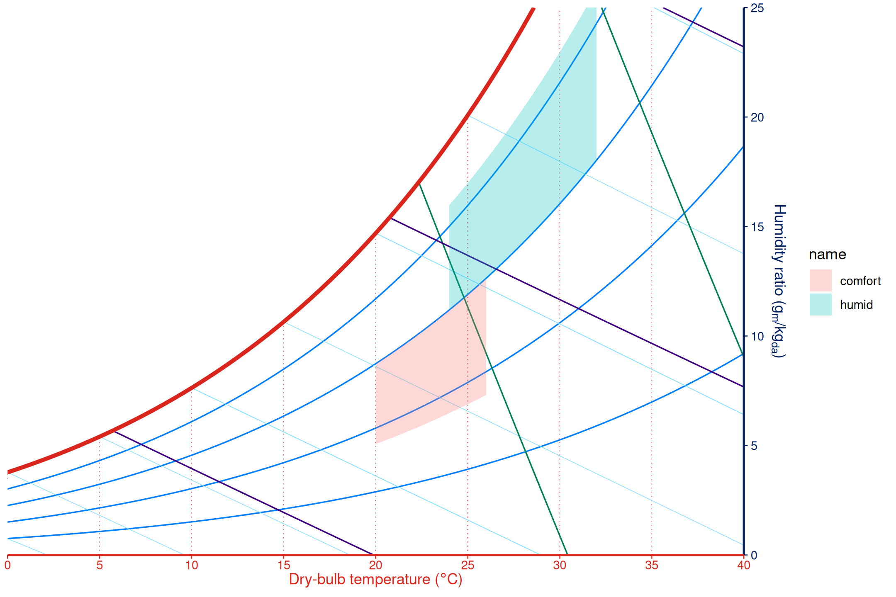
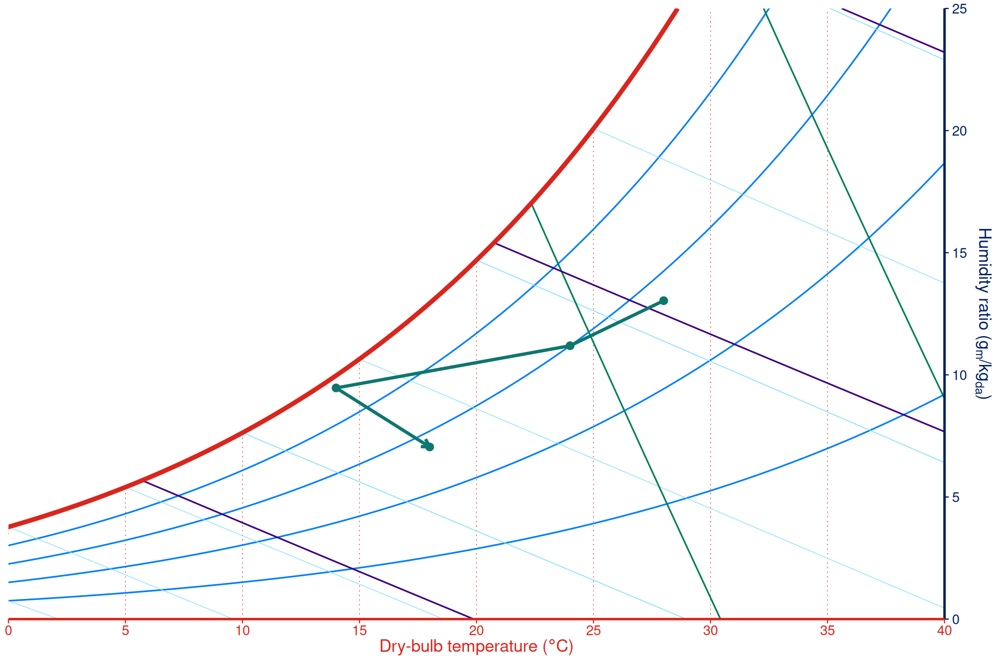
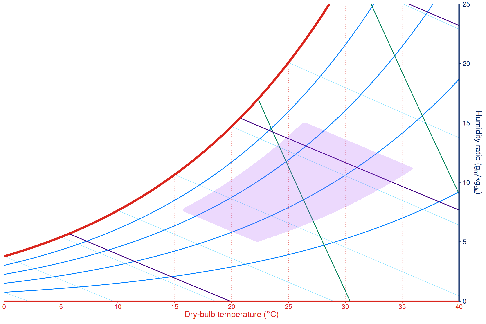
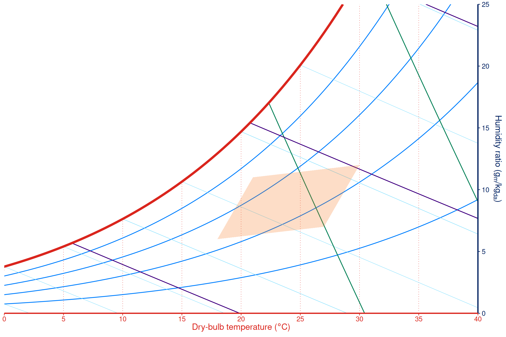

Use zones and process lines when a psychrometric chart needs to communicate constraints or movement between states, not just point observations.
Comfort and operating zones
geom_psychro_zone() draws filled psychrometric regions.
The default zone type, "dbt-rh", uses dry-bulb and
relative-humidity limits.
zones <- rbind(
data.frame(
name = "comfort",
tdb_min = 20, tdb_max = 26,
relhum_min = 35, relhum_max = 60
),
data.frame(
name = "humid",
tdb_min = 24, tdb_max = 32,
relhum_min = 60, relhum_max = 85
)
)
ggpsychro(tdb_lim = c(0, 40), hum_lim = c(0, 25)) +
psychro_preset("minimal") +
geom_psychro_zone(
aes(
tdb_min = tdb_min, tdb_max = tdb_max,
relhum_min = relhum_min, relhum_max = relhum_max,
fill = name
),
data = zones,
type = "dbt-rh",
alpha = 0.28,
colour = NA
)
Process lines and state points
geom_psychro_process() draws a path through state
points. Supply tdb plus exactly one state property:
humratio, relhum, wetbulb,
vappres, specvol, or enthalpy.
Relative humidity is supplied as percent values.
process <- data.frame(
stage = c("return", "mixed", "cooled", "supply"),
dry_bulb_temperature = c(28, 24, 14, 18),
relative_humidity = c(55, 60, 95, 55)
)
ggpsychro(tdb_lim = c(0, 40), hum_lim = c(0, 25)) +
psychro_preset("minimal") +
geom_psychro_process(
aes(tdb = dry_bulb_temperature, relhum = relative_humidity),
data = process,
colour = "#0f766e",
linewidth = 1,
arrow = grid::arrow(length = grid::unit(0.08, "inches"))
) +
stat_psychro_state(
aes(tdb = dry_bulb_temperature, relhum = relative_humidity),
data = process,
colour = "#0f766e",
size = 2
)
Other zone types
Zones can also be bounded by enthalpy and relative humidity, specific volume and relative humidity, dry-bulb plus a maximum humidity ratio, or explicit polygon points.
limits <- data.frame(
enthalpy_min = 35000,
enthalpy_max = 65000,
relhum_min = 30,
relhum_max = 70
)
ggpsychro(tdb_lim = c(0, 40), hum_lim = c(0, 25)) +
psychro_preset("minimal") +
geom_psychro_zone(
aes(
enthalpy_min = enthalpy_min, enthalpy_max = enthalpy_max,
relhum_min = relhum_min, relhum_max = relhum_max
),
data = limits,
type = "enthalpy-rh",
fill = "#a855f7",
alpha = 0.22,
colour = NA
)
Use type = "xy-points" when the desired region is
already known as polygon points in dry-bulb temperature and display
humidity-ratio units.
polygon_zone <- data.frame(
tdb = c(18, 27, 30, 21),
humratio = c(6, 7, 12, 11)
)
ggpsychro(tdb_lim = c(0, 40), hum_lim = c(0, 25)) +
psychro_preset("minimal") +
geom_psychro_zone(
aes(tdb = tdb, humratio = humratio),
data = polygon_zone,
type = "xy-points",
fill = "#f97316",
alpha = 0.24,
colour = NA
)